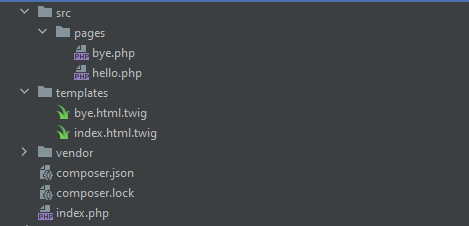

MVC
Шаблон проектирования MVC представляет собой шаблон программной архитектуры «Модель-Представление-Контроллер». MVC — это один из способов организации кода и набор рекомендаций, описывающих ряд правил. Задача MVC заключается в том, чтобы наш код проще воспринимался и читался, а также быстрее обрабатывался компьютером.
Главная идея MVC — отделить внешний вид приложения от его логики. Здесь мы говорим о веб-приложениях, поэтому внешний вид в данном случае — это HTML-разметка и CSS-оформление. А вот под логикой понимаются разнообразные скрипты, классы, функции и пр.
Модель
«Модель» — это постоянное хранилище данных, которое используется по всей структуре. Компонент обеспечивает доступ к данным для просмотра, отбора, записи. По сути это мост между другими компонентами: «Контроллер» и «Представление».
«Модель» не «знает», что происходит с данными дальше. Её задачи — поиск и подготовка данных, передаваемых прочим компонентам MVC, а также обработка их в постоянном хранилище.
Представление
Это часть системы, в которой данным, запрашиваемым у «Модели», задаётся финишный вид их вывода. В веб-приложениях, построенных с помощью MVC, «Представлением» называют компонент, где генерируется и отображается код HTML. В нашем случае такой компонент является twig
Кроме того, «Представление» перехватывает действия пользователей, которые после передаются «Контроллеру». Характерный пример — кнопка, генерируемая «Представлением». Если пользователь её нажимает, в «Контроллере» запускается действие.
Контроллер
Он занимается обработкой данных, которые вводятся пользователем, а также участвует в обновлении «Модели». Этот компонент работает при взаимодействии с пользователем.
«Контроллер» можно назвать сборщиком информации, которая передаётся в «Модель» с последующей организацией хранения. Компонент не содержит другой логики, кроме той, что нужна для сбора входящих данных. Также он подключается лишь к одному «Представлению» и к одной «Модели». Таким образом создаётся система с 1-сторонним потоком данных, с одним выходом и одним входом в точках обмена.
Роутинг

Роутинг
Роутинг - это сопоставление пути с контроллером/экшном
Проблема №1. Данные лежат в разных массивах + !ООП
// Для урла http://www.example.com/posts/view/3?name=test
echo $_SERVER['PATH_INFO']; // posts/view/3
echo $_GET['name']; // test
echo $_POST['name']; // если POST Запрос -> test
Решением данной пробемы является использования компонента от symfony - HttpFoundation Component
Установка HttpFoundation Component
composer require symfony/http-foundation
Созданеие Request
use Symfony\Component\HttpFoundation\Request;
$request = Request::createFromGlobals();
// или
$request = new Request(
$_GET,
$_POST,
[],
$_COOKIE,
$_FILES,
$_SERVER
);
Информация Request
Объект Request содержит информацию о клиентском запросе. Доступ к этой информации можно получить через несколько публичных свойств:
- request: эквивалент $_POST
- query: эквивалент $_GET
- cookies: эквивалент $_COOKIE
- attributes: эквивалента нет - используется вашим приложением для хранения других данных (см. ниже )
- files: эквивалент $_FILES
- server: эквивалент $_SERVER
- headers: в основном эквивалентно подмножеству $_SERVER
Пример для поля query
// параметры запроса '?foo=bar'
$request->query->get('foo');
// return 'bar'
$request->query->get('bar');
// return null
$request->query->get('bar', 'baz');
// return 'baz'
Ещё пример поля query
// the query string is '?foo[bar]=baz'
// не используйте $request->query->get('foo'); вместо этого используйте следующее:
$request->query->all('foo');
// returns ['bar' => 'baz']
// если параметр отсутствует вернется пустой массив:
$request->query->all('qux');
// returns []
$request->query->get('foo[bar]');
// returns null
$request->query->all()['foo']['bar'];
// returns 'baz'
Получение body
$content = $request->getContent();
Если запрашиваемые данные могут быть $_POST данными или строкой JSON, можно использовать метод getPayload() , который возвращает экземпляр InputBag, оборачивающий эти данные:
$data = $request->getPayload();
Получение path
// for a request to http://example.com/blog/index.php/post/hello-world
// the path info is "/post/hello-world"
$request->getPathInfo();
Класс Resposne
Объект Response содержит всю информацию, которую необходимо отправить обратно клиенту из данного запроса. Конструктор принимает до трех аргументов: содержимое ответа, код статуса и массив заголовков HTTP:
$response = new Response(
'Content',
Response::HTTP_OK,
['content-type' => 'text/html']
);
Изменение Response
Вы также можете менять всю информацию после создвания объекта
$response->setContent('Hello World');
$response->headers->set('Content-Type', 'text/plain');
$response->setStatusCode(Response::HTTP_NOT_FOUND);
Отправка Response
Отправка ответа клиенту осуществляется путем вызова метода send() :
$response->send();
Что внутри функции send
public function send()
{
$this->sendHeaders();
$this->sendContent();
if (\function_exists('fastcgi_finish_request')) {
fastcgi_finish_request();
} elseif (\function_exists('litespeed_finish_request')) {
litespeed_finish_request();
} elseif (!\in_array(\PHP_SAPI, ['cli', 'phpdbg'], true)) {
static::closeOutputBuffers(0, true);
flush();
}
return $this;
}
public function sendContent()
{
echo $this->content;
return $this;
}
После того как рассмотрели Request и Response. Создадим наш маленький проект.
Создание проекта
- Создать папку для проекта
- Добавить файл index.php
- Добавить папку templates для шаблонов
- Добавить наш главный шаблон index.html.twig в папку templates
- Выполнить команду в нашей папке : composer require "twig/twig:^3.0"
- Запускаем наш сервер с помощью команды: php -S localhost:8000
Структура проекта
Код в index.php
$loader = new \Twig\Loader\FilesystemLoader(__DIR__ . '/templates');
$twig = new \Twig\Environment($loader);
$request = Request::createFromGlobals();
$response = new Response($twig->render("index.html.twig", ['name' => 'Петр']));
$response->send();
Шаблон в index.html.twig
Проблема #2 сейчас пользователь всегда будет попадать в наш шаблон. Без разницы какой путь указал пользователь. Отсутствует структура пути пользователя
Добавляем роутинг для структуры в виде массива(файл index.php)
require_once __DIR__.'/vendor/autoload.php';
use Symfony\Component\HttpFoundation\Request;
use Symfony\Component\HttpFoundation\Response;
$loader = new \Twig\Loader\FilesystemLoader(__DIR__ . '/templates');
$twig = new \Twig\Environment($loader);
$request = Request::createFromGlobals();
$response = new Response();
$map = [
'/hello' => __DIR__. '/src/pages/hello.php',
'/bye' => __DIR__. '/src/pages/bye.php',
];
$path = $request->getPathInfo();
if (isset($map[$path])) {
ob_start();
include $map[$path];
$response->setContent(ob_get_clean());
} else {
$response->setStatusCode(404);
$response->setContent('Not Found');
}
$response->send();
Файл hello.php
/** @var \Twig\Environment $twig */
echo $twig->render("index.html.twig", ['name' => 'Петр']);
Файл bye.php
/** @var \Twig\Environment $twig */
echo $twig->render("bye.html.twig");
Файл bye.html.twig
Структура проекта
Небольшое улучшение в index.php
$request = Request::createFromGlobals();
$response = new Response();
$map = [
'/hello' => 'hello',
'/bye' => 'bye',
];
$path = $request->getPathInfo();
if (isset($map[$path])) {
ob_start();
extract($request->query->all(), EXTR_SKIP);
include sprintf(__DIR__ . '/src/pages/%s.php', $map[$path]);
$response = new Response(ob_get_clean());
} else {
$response = new Response('Not Found', 404);
}
$response->send();
Файл hello.php
/** @var \Twig\Environment $twig */
/** @var string $name */
echo $twig->render("index.html.twig", ['name' => $name]);
Страница hello
Теперь мы можем получить имя через переменную
Проблема #3. Роутинг в виде массива !== ООП
Добавляем компонент для роутинга с помощью команды:
composer require symfony/routing
Для карты путей используется класс RouteCollection
Добавление наших маршрутов
Каждая запись в коллекции определяется именем ( hello) и Route экземпляром, который определяется шаблоном маршрута ( /hello/{name}) и массивом значений по умолчанию для атрибутов маршрута ( ['name' => 'World']).
use Symfony\Component\Routing\RouteCollection;
$routes = new RouteCollection();
$routes->add('hello', new Route('/hello/{name}', ['name' => 'World']));
$routes->add('bye', new Route('/bye'));
Класс Url matcher
На основе информации, хранящейся в RouteCollectionэкземпляре, UrlMatcherэкземпляр может сопоставлять пути URL:
use Symfony\Component\Routing\Matcher\UrlMatcher;
use Symfony\Component\Routing\RequestContext;
$context = new RequestContext();
$context->fromRequest($request);
$matcher = new UrlMatcher($routes, $context);
$attributes = $matcher->match($request->getPathInfo());
Пример сопоставления. Обратите внимание, что сопоставленный маршрут автоматически сохраняется под специальным _route атрибутом
$matcher->match('/bye');
/* Result:
[
'_route' => 'bye',
];
*/
$matcher->match('/hello/Fabien');
/* Result:
[
'name' => 'Fabien',
'_route' => 'hello',
];
*/
$matcher->match('/hello');
/* Result:
[
'name' => 'World',
'_route' => 'hello',
];
*/
Если страница не найдена
$matcher->match('/not-found');
// throws a Symfony\Component\Routing\Exception\ResourceNotFoundException
require_once __DIR__.'/vendor/autoload.php';
use Symfony\Component\HttpFoundation\Request;
use Symfony\Component\HttpFoundation\Response;
use Symfony\Component\Routing;
$loader = new \Twig\Loader\FilesystemLoader(__DIR__ . '/templates');
$twig = new \Twig\Environment($loader);
$routes = include __DIR__ . '/src/routes.php';
$request = Request::createFromGlobals();
$response = new Response();
$context = new Routing\RequestContext();
$context->fromRequest($request);
$matcher = new Routing\Matcher\UrlMatcher($routes, $context);
try {
extract($matcher->match($request->getPathInfo()), EXTR_SKIP);
ob_start();
include sprintf(__DIR__ . '/src/pages/%s.php', $_route);
$response = new Response(ob_get_clean());
} catch (Routing\Exception\ResourceNotFoundException $exception) {
$response = new Response('Not Found', 404);
} catch (Exception $exception) {
$response = new Response('An error occurred', 500);
}
$response->send();
Файл routes.php
use Symfony\Component\Routing;
$routes = new Routing\RouteCollection();
$routes->add('hello', new Routing\Route('/hello/{name}', ['name' => 'World']));
$routes->add('bye', new Routing\Route('/bye'));
return $routes;
Далее отделим логику шаблонизации
function renderTemplate(Request $request): Response
{
$loader = new \Twig\Loader\FilesystemLoader(__DIR__ . '/templates');
$twig = new \Twig\Environment($loader);
extract($request->attributes->all(), EXTR_SKIP);
ob_start();
include sprintf(__DIR__ . '/src/pages/%s.php', $_route);
return new Response(ob_get_clean());
}
Благодаря этому мы можем отделить нашу логику роутинга от шаблонизации
$routes->add('hello', new Routing\Route('/hello/{name}', [
'name' => 'World',
'_controller' => 'renderTemplate',
]));
try {
$request->attributes->add($matcher->match($request->getPathInfo()));
$response = call_user_func($request->attributes->get('_controller'), $request);
} catch (Routing\Exception\ResourceNotFoundException $exception) {
$response = new Response('Not Found', 404);
} catch (Exception $exception) {
$response = new Response('An error occurred', 500);
}
Мы также можем писать свою собственную логику
$routes->add('hello', new Routing\Route('/hello/{name}', [
'name' => 'World',
'_controller' => function (Request $request): string {
return renderTemplate($request);
}
]));
Пример что мы можем сделать
$routes->add('hello', new Routing\Route('/hello/{name}', [
'name' => 'World',
'_controller' => function (Request $request): Response {
// $foo will be available in the template
$request->attributes->set('foo', 'bar');
$response = renderTemplate($request);
// change some header
$response->headers->set('Content-Type', 'text/plain');
return $response;
}
]));
Наш файл index.php
require_once __DIR__.'/vendor/autoload.php';
use Symfony\Component\HttpFoundation\Request;
use Symfony\Component\HttpFoundation\Response;
use Symfony\Component\Routing;
function renderTemplate(Request $request): Response
{
$loader = new \Twig\Loader\FilesystemLoader(__DIR__ . '/templates');
$twig = new \Twig\Environment($loader);
extract($request->attributes->all(), EXTR_SKIP);
ob_start();
include sprintf(__DIR__ . '/src/pages/%s.php', $_route);
return new Response(ob_get_clean());
}
$routes = include __DIR__ . '/src/routes.php';
$request = Request::createFromGlobals();
$response = new Response();
$context = new Routing\RequestContext();
$context->fromRequest($request);
$matcher = new Routing\Matcher\UrlMatcher($routes, $context);
try {
$request->attributes->add($matcher->match($request->getPathInfo()));
$response = call_user_func($request->attributes->get('_controller'), $request);
} catch (Routing\Exception\ResourceNotFoundException $exception) {
$response = new Response('Not Found', 404);
} catch (Exception $exception) {
$response = new Response('An error occurred', 500);
}
$response->send();
Создение нового контроллера в проекте
Все контроллеры будем создавать в src/Controller
namespace Framework\Controller;
use Symfony\Component\HttpFoundation\Response;
class LeapYearController
{
public function isLeapYear(?int $year = null): bool
{
if (null === $year) {
$year = (int)date('Y');
}
return 0 === $year % 400 || (0 === $year % 4 && 0 !== $year % 100);
}
public function index($request): Response
{
if ($this->isLeapYear($request->attributes->get('year'))) {
return new Response('Yep, this is a leap year!');
}
return new Response('Nope, this is not a leap year.');
}
}
Добавляем в autoload
"autoload": {
"psr-4": {"Framework\\": "src/"}
}
composer dump-autoload
Добавляем маршрут
use Framework\Controller\LeapYearController;
$routes->add('leap_year', new Routing\Route('/is_leap_year/{year}', [
'year' => null,
'_controller' => [new LeapYearController(), 'index'],
]));
Результат
Результат
Результат
В результате у нас получился небольшой фреймворк построенный на паттерне MVC
Что такое фреймворк
Фреймворк - программная платформа, определяющая структуру программной системы; программное обеспечение, облегчающее разработку и объединение разных компонентов большого программного проекта.
Symfony Framework
Ведущий PHP-фреймворк для создания веб-сайтов и веб-приложений. Создан на основе компонентов Symfony
Для работы с symfony нужно установить symfony cli
ИнструкцияСоздание проекта
Проект создается с помощью команды
symfony new my_project_directory --version="6.4.*" --webapp
Запуск сервера
symfony server:start --port=8001
Структура папок
Для того чтобы создавать контроллеры через консольную команду добавим пакет:
composer require symfony/maker-bundle --dev
Создадим контроллер
php bin/console make:controller IndexController
Файл IndexController
namespace App\Controller;
use Symfony\Bundle\FrameworkBundle\Controller\AbstractController;
use Symfony\Component\HttpFoundation\JsonResponse;
use Symfony\Component\Routing\Attribute\Route;
class IndexController extends AbstractController
{
#[Route('/index', name: 'app_index')]
public function index(): JsonResponse
{
return $this->json([
'message' => 'Welcome to your new controller!',
'path' => 'src/Controller/IndexController.php',
]);
}
}
Добавим twig в проект
composer require symfony/twig-bundle
Добавим в папку templates index.html.twig
Перепишем код нашего контроллера
namespace App\Controller;
use Symfony\Bundle\FrameworkBundle\Controller\AbstractController;
use Symfony\Component\HttpFoundation\Request;
use Symfony\Component\HttpFoundation\Response;
use Symfony\Component\Routing\Attribute\Route;
class IndexController extends AbstractController
{
#[Route('/', name: 'app_index')]
public function index(Request $request): Response
{
return $this->render('index.html.twig', [
'name' => $request->query->get('name', 'человек')
]);
}
}